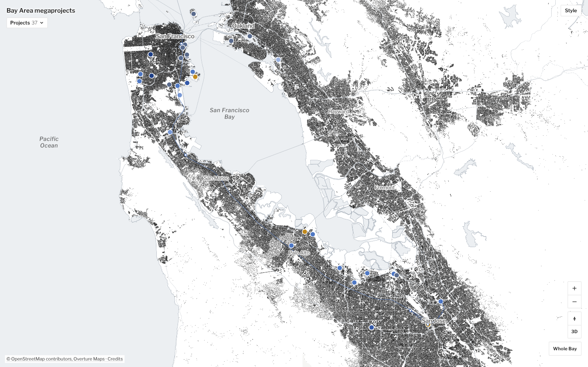
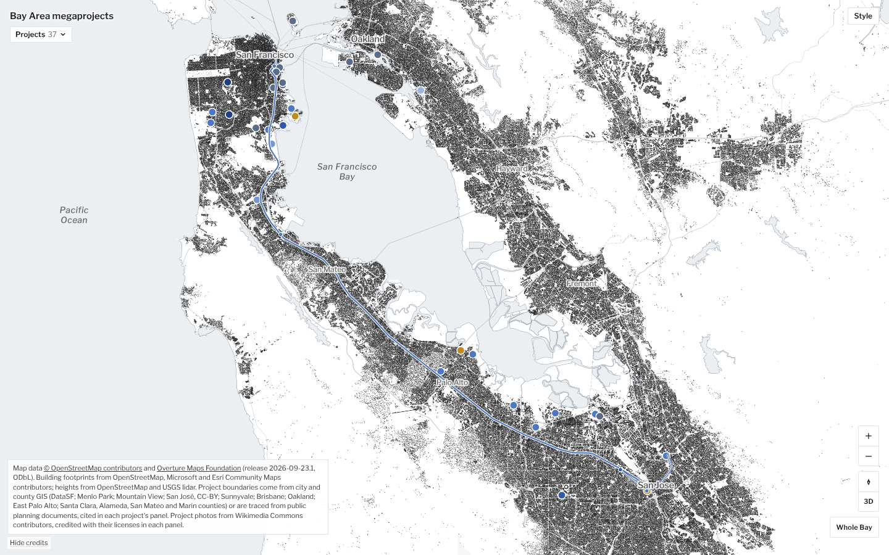
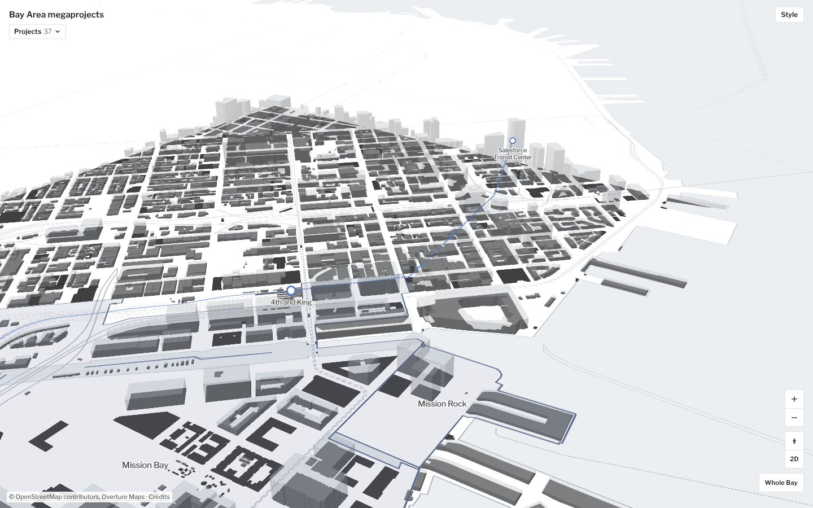
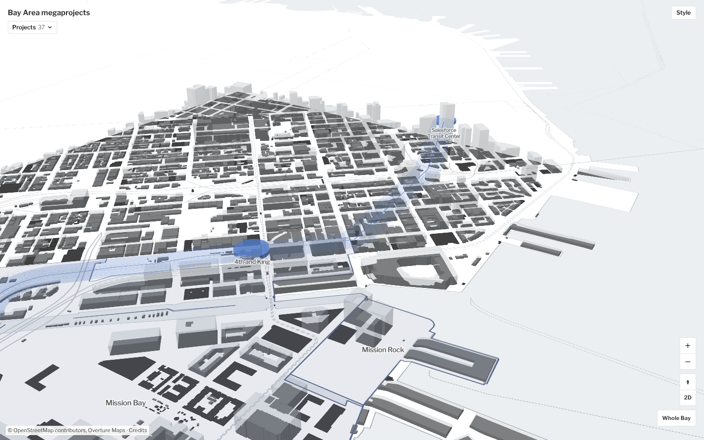
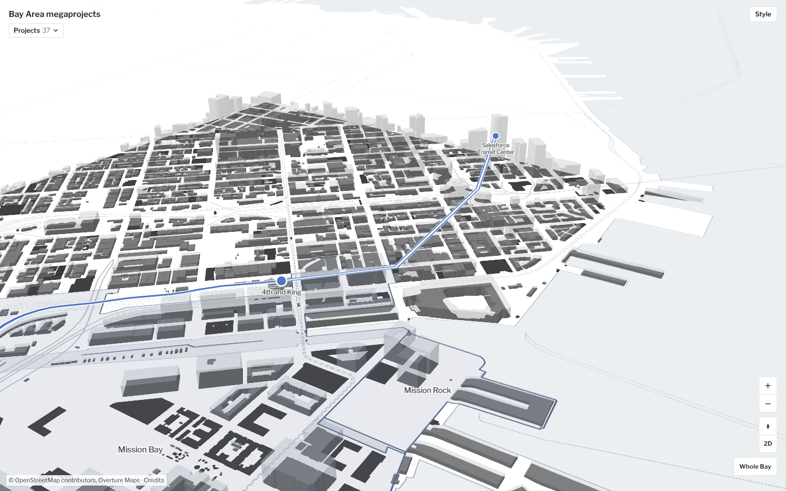
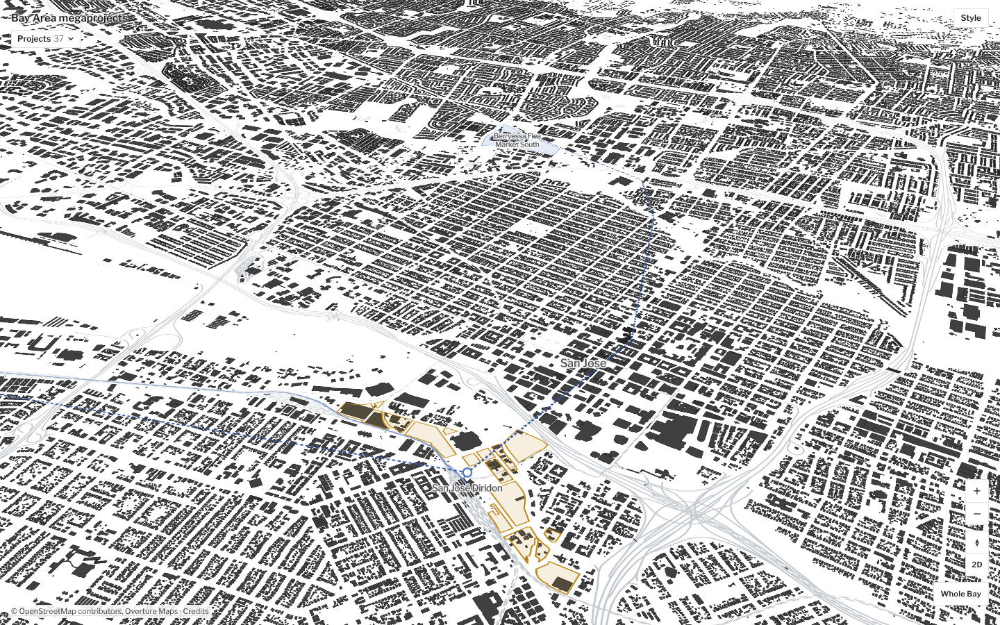
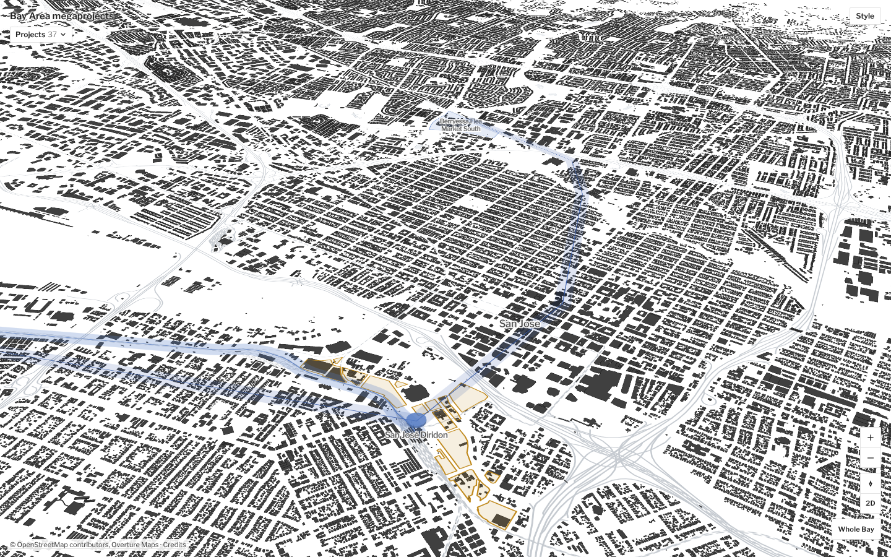
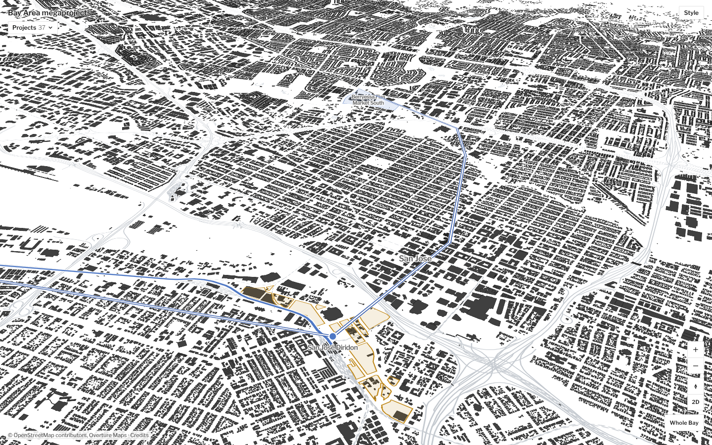

Mockup only. HSR follows the real Caltrain corridor (NTAD, public domain); The Portal and BART Silicon Valley Phase II are schematic lines between real station points, for judging style, not location. Station footprints in B are 60 m circles, not traced.
A. ThreadQuiet stage-colored line; dashed in tunnel, faint where it shares existing track; ring stations
B. Corridor bandWide translucent band like a site fill, thin spine; stations rise as low volumes
C. Cased lineBold line on a white casing; tunnels as a hollow tube; solid dot stations
Regional (Peninsula)


San Francisco, 3D (The Portal)



San José, 3D (BART Phase II)


